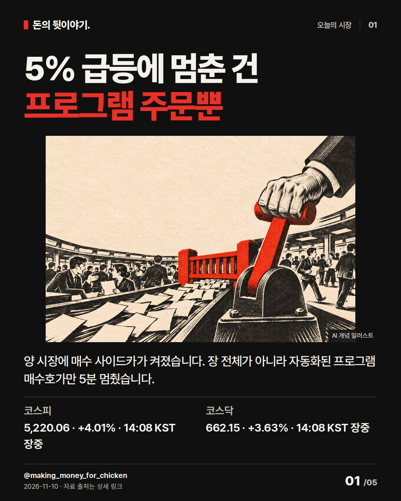
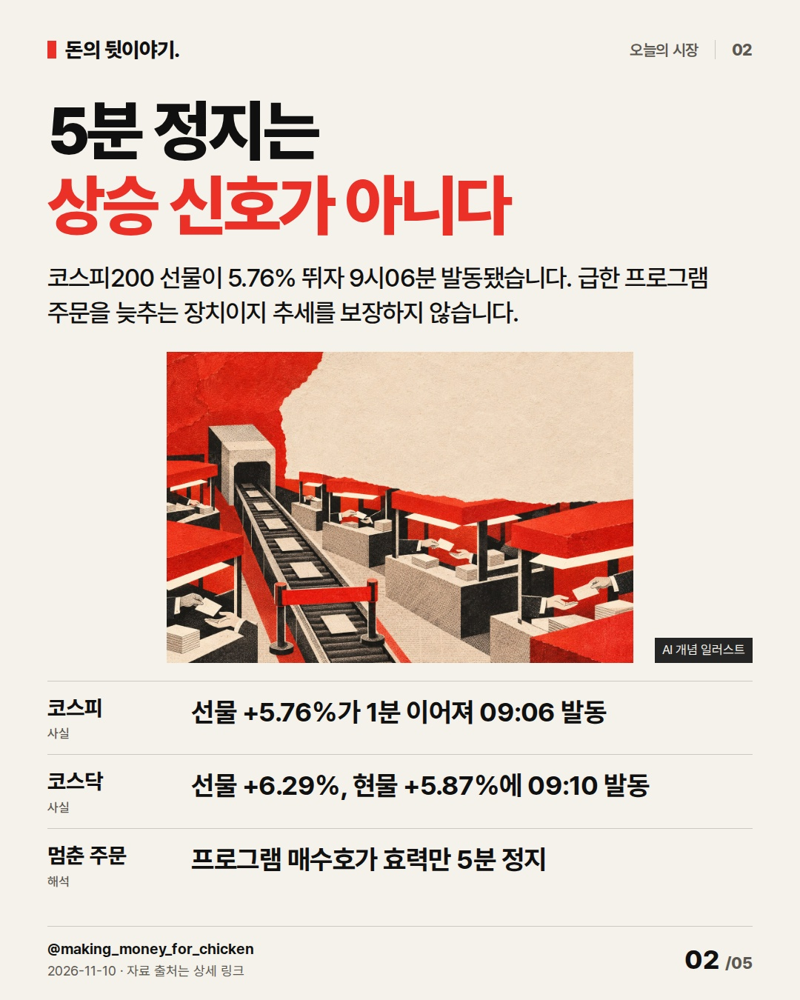
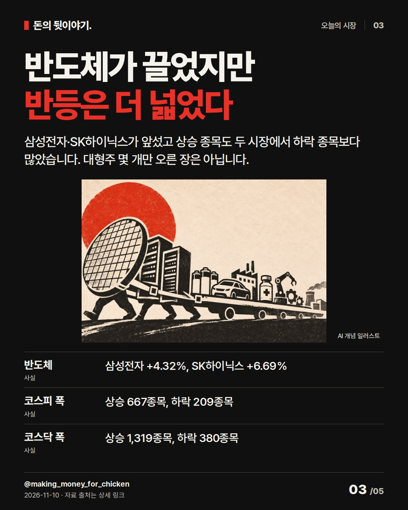
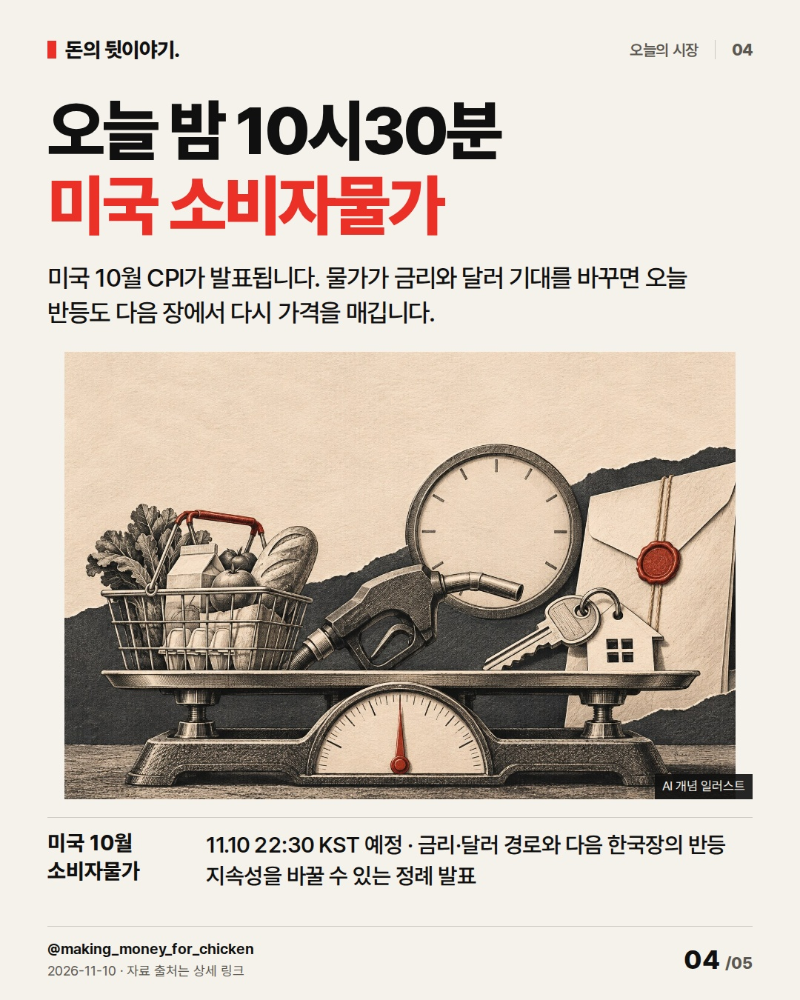
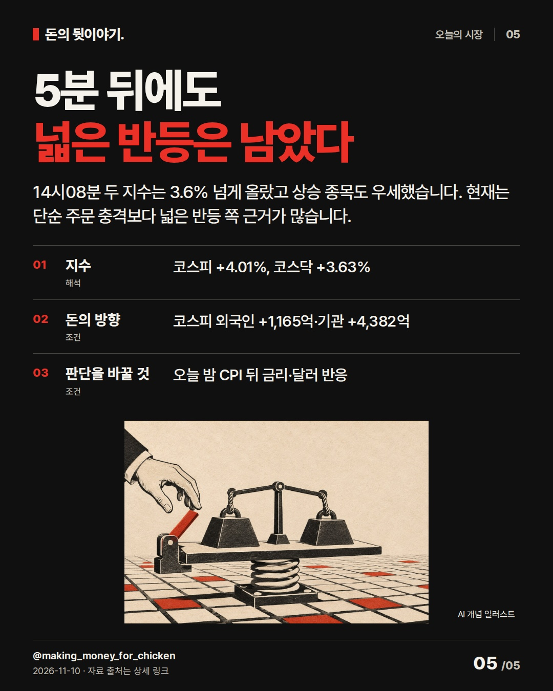

5% 급등에 멈춘 건
프로그램 주문뿐
두 시장에 매수 사이드카가 켜졌지만 장 전체가 멈춘 것은 아닙니다. 5분 뒤에도 남은 반등의 폭과 오늘 밤 미국 물가가 바꿀 조건을 봤습니다. #코스피 #사이드카 #미국CPI
5% 급등에 멈춘 건
프로그램 주문뿐

양 시장에 매수 사이드카가 켜졌습니다. 장 전체가 아니라 자동화된 프로그램 매수호가만 5분 멈췄습니다.
- 코스피: 5,220.06 · +4.01% · 14:08 KST 장중
- 코스닥: 662.15 · +3.63% · 14:08 KST 장중
AI 생성 개념 일러스트 · 실제 현장이나 공식 제품 사진이 아닙니다.5분 정지는
상승 신호가 아니다

코스피200 선물이 5.76% 뛰자 9시06분 발동됐습니다. 급한 프로그램 주문을 늦추는 장치이지 추세를 보장하지 않습니다.
- 코스피: 선물 +5.76%가 1분 이어져 09:06 발동
- 코스닥: 선물 +6.29%, 현물 +5.87%에 09:10 발동
- 멈춘 주문: 프로그램 매수호가 효력만 5분 정지
AI 생성 개념 일러스트 · 실제 현장이나 공식 제품 사진이 아닙니다.반도체가 끌었지만
반등은 더 넓었다

삼성전자·SK하이닉스가 앞섰고 상승 종목도 두 시장에서 하락 종목보다 많았습니다. 대형주 몇 개만 오른 장은 아닙니다.
- 반도체: 삼성전자 +4.32%, SK하이닉스 +6.69%
- 코스피 폭: 상승 667종목, 하락 209종목
- 코스닥 폭: 상승 1,319종목, 하락 380종목
AI 생성 개념 일러스트 · 실제 현장이나 공식 제품 사진이 아닙니다.오늘 밤 10시30분
미국 소비자물가

미국 10월 CPI가 발표됩니다. 물가가 금리와 달러 기대를 바꾸면 오늘 반등도 다음 장에서 다시 가격을 매깁니다.
- 미국 10월 소비자물가: 11.10 22:30 KST 예정 · 금리·달러 경로와 다음 한국장의 반등 지속성을 바꿀 수 있는 정례 발표
AI 생성 개념 일러스트 · 실제 현장이나 공식 제품 사진이 아닙니다.5분 뒤에도
넓은 반등은 남았다

14시08분 두 지수는 3.6% 넘게 올랐고 상승 종목도 우세했습니다. 현재는 단순 주문 충격보다 넓은 반등 쪽 근거가 많습니다.
- 지수: 코스피 +4.01%, 코스닥 +3.63%
- 돈의 방향: 코스피 외국인 +1,165억·기관 +4,382억
- 판단을 바꿀 것: 오늘 밤 CPI 뒤 금리·달러 반응
AI 생성 개념 일러스트 · 실제 현장이나 공식 제품 사진이 아닙니다.자료 출처
- 네이버 금융 · 코스피 실시간 지수 · 2026-11-10 14:08 KST; 5,220.06, 전일 5,018.85 대비 +4.01% · 조회 2026-11-10T14:09:23+09:00
- 네이버 금융 · 코스닥 실시간 지수 · 2026-11-10 14:08 KST; 662.15, 전일 638.97 대비 +3.63% · 조회 2026-11-10T14:09:23+09:00
- 네이버 금융 · 코스피 장중 수급·시장 폭 · 2026-11-10 14:09 확인; 외국인 +1,165억·기관 +4,382억, 상승 667·하락 209 · 조회 2026-11-10T14:09:23+09:00
- 네이버 금융 · 코스닥 장중 수급·시장 폭 · 2026-11-10 14:09 확인; 외국인 -1,345억·기관 +1,364억, 상승 1,319·하락 380 · 조회 2026-11-10T14:09:23+09:00
- 뉴스핌 · 코스피·코스닥 매수 사이드카 발동 · 2026-11-10 09:34; 코스피 09:06, 코스닥 09:10 발동값과 5분 정지 확인 · 조회 2026-11-10T14:05:00+09:00
- 한국거래소 · 프로그램매매 사이드카 제도 · 코스피200 선물 5% 변동 1분 지속 시 프로그램 호가 5분 효력정지 규정 · 조회 2026-11-10T14:06:00+09:00
- 미국 노동통계국 · 2026년 11월 발표 일정 · 2026-11-10 08:30 EST; 10월 소비자물가 발표 예정 · 조회 2026-11-10T14:06:30+09:00
- 불스토리 · 마이크론 실적에 코스피 급등, 매수 사이드카 발동 (편집 참고) · 공식 사이트 본문·해석·반대 시나리오·체크리스트 전체 열람; Instagram 카드 미열람 · 조회 2026-11-10T14:05:30+09:00
- 홍춘욱 · 1996년을 연상시키는 경제 흐름 (편집 참고) · 작성자 표시 공개 원문 전체 열람; 현재 시장 사실 근거로 사용하지 않음 · 조회 2026-11-10T14:06:30+09:00
- Morning Brew · Stocks get pummeled amid post-midterm AI jitters (편집 참고) · 2026-11-06 공개 기사 제목·본문 검색 공개 구간 확인; 전체 카드 형식 아님 · 조회 2026-11-10T14:12:00+09:00
- CNBC Daily Open · The AI bulls are back (편집 참고) · 2026-11-09 공개 뉴스레터 본문 확인; Instagram 카드 미열람 · 조회 2026-11-10T14:12:00+09:00
편집 기록
{
"improvement": "최근 5편은 수급 목록과 검정·오프화이트·빨강 콜라주 구도가 반복됐습니다. 이번에는 ‘장 전체가 아니라 프로그램 매수호가만 5분 멈춘다’를 첫 두 장에서 답하고, 장마다 피사체와 시점을 바꿨습니다.",
"reason": "불스토리 공식 사이트의 관련 글은 본문·해석·반대 시나리오·체크리스트까지 읽었고 Instagram 카드는 보지 못했습니다. 홍춘욱 공개 원문 전체는 불안한 질문 뒤 현재 판단을 먼저 주고 구조 차이로 설명하는 순서를 참고했습니다. Morning Brew는 공개 기사 구간, CNBC는 공개 뉴스레터 본문을 확인했습니다.",
"application": "초안 ‘양 시장 매수 사이드카’→퇴고 ‘5% 급등에 멈춘 건 프로그램 주문뿐’. 2장에서 일반 거래는 계속된다는 작동 방식을 붙였고, 3장에서 코스피 667·코스닥 1,319개 상승 종목으로 반등의 폭을 새 근거로 보강했습니다.",
"avoided_repetition": "전날처럼 기관·외국인 수급만 결론으로 반복하지 않았고 ‘사이드카가 상승을 보장한다’는 오해를 버렸습니다. 장초반 5%대 수치도 14:08 현재값과 섞지 않았습니다. 다음 편은 종가 뒤 프로그램 매수와 시장 폭이 함께 남았는지 비교합니다. 반응 지표는 미확보입니다."
}투자 참고용 · 매수·매도 권유 아님.